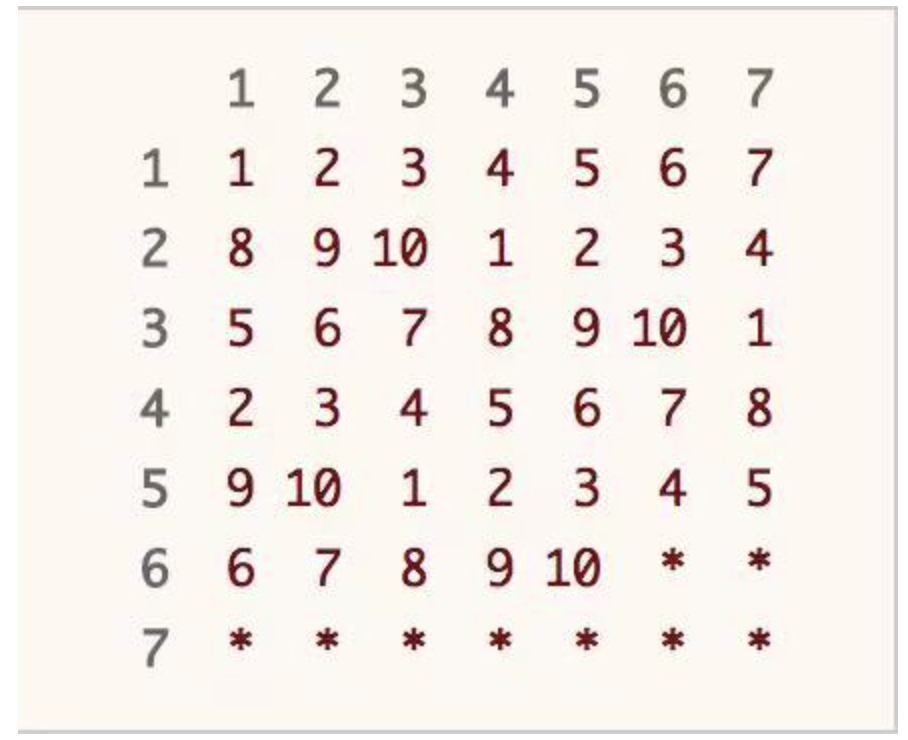
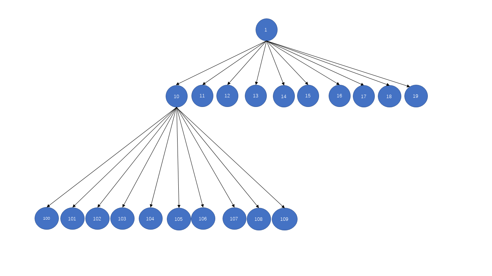
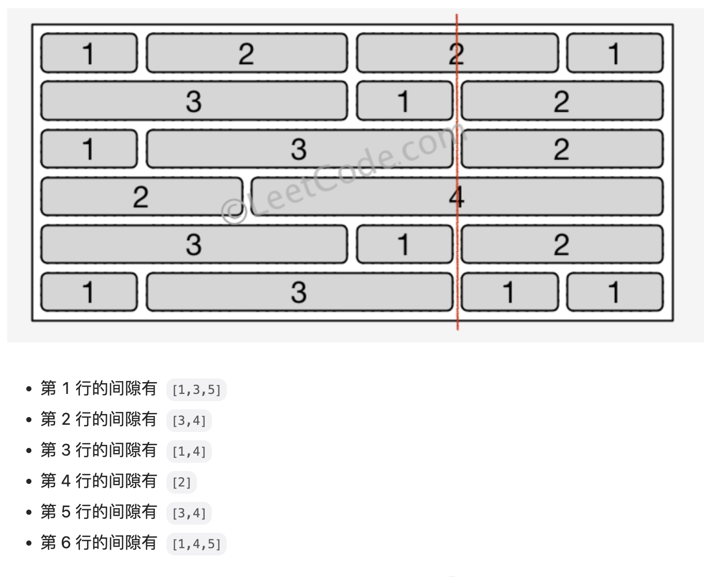

CodeTop
101. ⭐️ 手撕排序（中等）

-
快速排序：不稳定排序，时间复杂度$O(n\log\ n)$，最坏时间复杂度$O(n^2)$（有序数组或重复数组）
def sortArray(nums): def partition(arr,left,right): pivot = arr[left] idx = left+1 for i in range(idx,right+1): if arr[i]<pivot: arr[i],arr[idx]=arr[idx],arr[i] idx+=1 nums[left],nums[idx-1]=nums[idx-1],nums[left] return idx-1 # 双指针 def partition2(arr,left,right): pivot = arr[left] l,r = left+1,right while l<=r: while nums[l]<=pivot and l<=r: l+=1 while nums[r]>pivot and l<=r: r-=1 if l<=r: nums[l],nums[r]=nums[r],nums[l] l+=1 r-=1 nums[left],nums[r]=nums[r],nums[left] return r def quicksort(arr,left,right): if left<right: idx = partition(arr,left,right) quicksort(arr,left,idx-1) quicksort(arr,idx+1,right) n=len(nums) quicksort(nums,0,n-1) return nums优化方法：选择更合适的 pivot（随机选择、三数取中）；当数据量小时，使用插入排序。
- 选择更合适的 pivot
# 随机选择 pivot def random_partition(nums,left,right): p_idx = random.randint(left,right) nums[left],nums[p_idx]=nums[p_idx],nums[left] return partition(nums,left,right) # 三数取中选择 pivot，解决数组基本有序的情况 def tree_partition(nums,left,right): mid = left+(right-left)//2 if nums[left]<=nums[mid]: p_idx = mid if nums[right]>=nums[mid] else left if nums[right]<=nums[left] else right else: p_idx = left if nums[right]>=nums[left] else mid if nums[right]<=nums[mid] else right nums[left],nums[p_idx]=nums[p_idx],nums[left] return partition(nums,left,right)- 当数据量小于等于 20 时，使用插入排序
# 选择排序 def insertsort(arr,left,right): for i in range(left+1,right+1): j=i-1 cur=nums[i] while j>=0 and nums[j]>cur: nums[j],nums[j+1]=nums[j+1],nums[j] j-=1 def quicksort(arr,left,right): if right-left<=20: insertsort(arr,left,right) return if left<right: idx = tree_partition(arr,left,right) quicksort(arr,left,idx-1) quicksort(arr,idx+1,right)- 三路快排，开辟一块区域存储和 pivot 相等的元素。
def sortArray(self, nums: List[int]) -> List[int]: if len(nums) <= 1: return nums # 随机取数 避免因为pivot区分度不强造成的算法退化 pivot = random.choice(nums) # O(n)划分 left = self.sortArray([x for x in nums if x < pivot]) right = self.sortArray([x for x in nums if x > pivot]) # 相同值保留 避免因为大量相同元素造成的算法退化 mid = [x for x in nums if x == pivot] return left + mid + right -
堆排序：$O(n\log\ n)$，非稳定
先建堆，对最后一个非叶子节点
n//2-1开始向前遍历；排序时，每次将未排序的最后一个结点与根节点交换，然后对根节点建堆。
# 大顶堆 -> 升序排列 def heapify(self,arr,n,i): largest = i l,r=2*i+1,2*i+2 if l<n and arr[l]>arr[largest]: largest=l if r<n and arr[r]>arr[largest]: largest=r if largest!=i: arr[i],arr[largest]=arr[largest],arr[i] self.heapify(arr,n,largest) def sortArray(self, nums: List[int]) -> List[int]: n=len(nums) for i in range(n//2-1,-1,-1): self.heapify(nums,n,i) for i in range(n-1,0,-1): nums[i],nums[0]=nums[0],nums[i] # 将根节点移至末尾，表示已排序 self.heapify(nums,i,0) # n=i，表示末尾已排序，不参与 heapify return nums -
归并排序：$O(n\log\ n)$
def merge_sort(self, nums, l, r): if l == r: return mid = (l + r) // 2 self.merge_sort(nums, l, mid) self.merge_sort(nums, mid + 1, r) tmp = [] i, j = l, mid + 1 while i <= mid or j <= r: if i > mid or (j <= r and nums[j] < nums[i]): tmp.append(nums[j]) j += 1 else: tmp.append(nums[i]) i += 1 nums[l: r + 1] = tmp def sortArray(self, nums: List[int]) -> List[int]: self.merge_sort(nums, 0, len(nums) - 1) return nums
102. 字符串相加（简单）
-
模拟
设置两个指针与进位标志，模拟竖式加法。
def addStrings(self, num1: str, num2: str) -> str: p1, p2, c = len(num1)-1,len(num2)-1, 0 ans="" while p1>=0 or p2>=0 or c: v1 = int(num1[p1]) if p1>=0 else 0 v2 = int(num2[p2]) if p2>=0 else 0 s = (v1+v2+c)%10 c = (v1+v2+c)//10 # 后更新 c ans = str(s)+ans p1-=1 p2-=1 return ans
103. 重排链表（中等）

-
线性表
使用一个列表按序存储链表，空间复杂度为 $O(n)$
-
寻找链表中点+反转链表+合并链表
先寻找链表中点，然后对链表后半部分进行反转，最后合并。
def reorderList(self, head: Optional[ListNode]) -> None: def midNode(head): slow,fast=head,head while fast.next and fast.next.next: slow,fast=slow.next,fast.next.next return slow def reverse(head): pre,p=None,head while p: pre,p.next,p = p,pre,p.next return pre def merge(l1,l2): while l1 and l2: t1,t2=l1.next,l2.next l1.next,l2.next=l2,t1 l1,l2=t1,t2 mid = midNode(head) rhead,mid.next = mid.next,None rhead = reverse(rhead) merge(head,rhead)
104. 用栈实现队列（简单）
-
栈
维护一个输入栈和一个输出栈，每次输入时直接将元素压入输入栈；每次输出时，若输出栈不会空，直接弹出输出栈栈顶元素，否则将输出栈全部元素一次弹出压入输出栈，再弹出输出栈栈顶元素。
class MyQueue: def __init__(self): self.in_stack = [] self.out_stack = [] def push(self, x: int) -> None: self.in_stack.append(x) def pop(self) -> int: if self.out_stack: return self.out_stack.pop() while self.in_stack: self.out_stack.append(self.in_stack.pop()) return self.out_stack.pop() def peek(self) -> int: if self.out_stack: return self.out_stack[-1] while self.in_stack: self.out_stack.append(self.in_stack.pop()) return self.out_stack[-1] def empty(self) -> bool: return not self.in_stack and not self.out_stack
105. 删除排序链表中的重复元素 II（中等）

-
遍历
def deleteDuplicates(self, head: Optional[ListNode]) -> Optional[ListNode]: pre = dummy = ListNode(next=head) cur = head while cur: if cur.next and cur.val==cur.next.val: # 遇到重复节点 while cur.next and cur.val == cur.next.val: cur = cur.next cur=pre.next=cur.next else: pre,cur=pre.next,cur.next return dummy.next
106. 复原 IP 地址（中等）
-
回溯
定义回溯函数 backtracing(path,idx,num) ，path 表示当前已经分割好的整数，idx 表示当前遍历到的下标，num 表示已经添加了多少
.。每次循环判断 s[idx:idx+i] 是否为合法整数，如果是则加入 path，进入 backtracking(path,idx+i,num+1)。def restoreIpAddresses(self, s: str) -> List[str]: def legal(s): if not s or (s[0]=='0' and len(s)>1) or int(s)>255: return False return True def backtracking(path,idx,num): if num==3 and legal(s[idx:]): # 已经添加了三个.并且剩下部分是合法整数 ans.append('.'.join(path+[s[idx:]])) return if idx>=n: return # 遍历到结尾 for i in range(1,4): sub = s[idx:idx+i] if legal(sub): path.append(sub) backtracking(path,idx+i,num+1) path.pop() ans,n=[],len(s) if n<4 or n>12: return [] # 剪枝 backtracking([],0,0) return ans
107. ⭐️ x 的平方根（简单）

-
二分查找
找到满足 $k^2\leq x$ 最大的k
class Solution: def mySqrt(self, x: int) -> int: l,r,ans=0,x,-1 while l<=r: mid = l+(r-l)//2 if mid*mid<=x: ans = mid l=mid+1 else: r=mid-1 return ans -
牛顿迭代法
选取初始点 $x_i$，不断通过 $x_i$ 处的切线来逼近零点。
选取函数上一点 $(x_i,x_i^2-C)$，则此处的切线为 $y=2x_i(x-x_i)+x_i^2-C$，则该切线与 x 轴的交点即为逼近的下一个点 $x_{i+1}$。令 $y=0$，有 $x=\frac{x_i^2-C}{2x_i}=\frac{1}{2}(x_i-\frac{C}{x_i})$。

def mySqrt(self, x: int) -> int: if x<=1: return x k=x while k*k>x: k=(k+x/k)//2 return int(k)
108. 字符串转换整数 (atoi)（中等）
-
模拟
设置边界变量 $bdr=2^{31}//10$，当遍历到下一位数字时，当前结果大于边界变量或等于边界变量且当前数字大于 7 时发生越界。 $2^{31}=2147483648$
def myAtoi(self, s: str) -> int: if not s: return 0 ans,flag,i=0,1,0 bdr,min_int,max_int=2**31//10,-2**31,2**31-1 while s[i]==' ': i+=1 if i==len(s): return 0 if s[i] in '-+': if s[i]=='-': flag=-1 i+=1 for c in s[i:]: if not '0'<=c<='9': break if ans>bdr or (ans==bdr and c>'7'): # 越界 return max_int if flag==1 else min_int ans = ans*10+int(c) return ans*flag
109. 比较版本号（中等）
-
字符串分割
若版本号不存在某下标处的修订号，视为0。
使用
itertools.zip_longest。内置的zip函数以元素最小的对象为基准，itertools.zip_longest以元素最多的元素为基准，使用fillvalue填充。from itertools import zip_longest def compareVersion(self, version1: str, version2: str) -> int: for v1, v2 in zip_longest(version1.split('.'), version2.split('.'), fillvalue=0): x, y = int(v1), int(v2) if x != y: return 1 if x > y else -1 return 0 -
双指针
使用双指针优化空间复杂度。
def compareVersion(self, version1: str, version2: str) -> int: m,n=len(version1),len(version2) i,j=0,0 while i<m or j<n: v1=0 while i<m and version1[i]!='.': v1=v1*10+int(version1[i]) i+=1 i+=1 # 跳过 . v2=0 while j<n and version2[j]!='.': v2=v2*10+int(version2[j]) j+=1 j+=1 # 跳过 . if v1!=v2: return 1 if v1>v2 else -1 return 0
110. ⭐️ 字符串相乘（中等）

-
竖式计算（加法）
模拟竖式计算，依次计算单位乘积做加法。
class Solution: def multiply(self, num1: str, num2: str) -> str: def add_func(num1,num2): i,j=len(num1)1,len(num2)-1 s,add,res=0,0,[] while i>=0 or j>=0 or add>0: v1 = int(num1[i]) if i>=0 else 0 v2 = int(num2[j]) if j>=0 else 0 s = v1+v2+add res.append(str(s%10)) add=s//10 i,j=i-1,j-1 return res[::-1] if num1[0]=='0' or num2[0]=='0': return "0" m,n=len(num1),len(num2) base,res=0,[] for i in range(n-1,-1,-1): num,add,tmp=0,0,[] for j in range(m-1,-1,-1): mul = int(num1[j])*int(num2[i])+add tmp.append(str(mul%10)) add=mul//10 if add: tmp.append(str(add)) tmp = ['0']*base+tmp base+=1 res = add_func(res,tmp[::-1]) return ''.join(res) -
⭐️ 乘法
令 m 和 n 分别为 num1 和 num2 的长度，可以证明他们乘积的长度为 m+n-1 或 m+n，证明如下：
- num1 和 num2 都取最小值，即 $10^{m-1},\ 10^{n-1}$，有 $num_1\times num_2=10^{m+n-2}$，长度为 m+n-1。
- num1 和 num2 都取最大值，即 $10^{m}-1,\ 10^{n}-1$，有 $num_1\times num_2=10^{m+n}-10^m-10^n+1$，明显这个结果小于 $10^{m+n}$ 大于 $10^{m+n-1}$，即长度为 m+n
故创建长度为 m+n 的数组储存结果。当 num1 的第 i 位与 num2 的第 j 位相乘时，将乘积存储在答案数组的 第 i+j+1 位。再通过一次遍历处理乘积的进位。
def multiply(self, num1: str, num2: str) -> str: if num1 == "0" or num2 == "0": return "0" m, n = len(num1), len(num2) ansArr = [0] * (m + n) for i in range(m - 1, -1, -1): x = int(num1[i]) for j in range(n - 1, -1, -1): ansArr[i + j + 1] += x * int(num2[j]) for i in range(m + n - 1, 0, -1): # 处理进位 ansArr[i - 1] += ansArr[i] // 10 ansArr[i] %= 10 index = 1 if ansArr[0] == 0 else 0 # 丢弃高位 ans = "".join(str(x) for x in ansArr[index:]) return ans
111. ⭐️ 反转字符串中的单词（中等）
-
⭐️ 原地交换
空间复杂度为 O(1)
class Solution: def trim(self,s): # 去除多余空格 i,j=0,len(s)-1 while i<=j and s[i]==' ': # 前置空格 i+=1 while j>=i and s[j]==' ': # 后置空格 j-=1 ret = [] while i<=j: # 单词间多余空格 if s[i]!=' ': ret.append(s[i]) elif ret[-1] != ' ': # 不是连续空格 ret.append(s[i]) i+=1 return ret def reverse_str(self,s,left,right): # 反转字符串 while left<right: s[left],s[right]=s[right],s[left] left+=1 right-=1 def reverse_word(self,s): # 反转单词 n=len(s) start,end=0,0 while start<n: while end<n and s[end]!=' ': end+=1 self.reverse_str(s,start,end-1) end+=1 start=end def reverseWords(self, s: str) -> str: s = self.trim(s) self.reverse_str(s,0,len(s)-1) self.reverse_word(s) return ''.join(s) -
单词列表
将遍历到的单词先用一个列表存储，空间复杂度 O(n)
112. 求根节点到叶节点数字之和（中等）
-
DFS
def sumNumbers(self, root: Optional[TreeNode]) -> int: self.ans=0 def dfs(node,s): s=s*10+node.val if not node.left and not node.right: self.ans+=s return if node.left: dfs(node.left,s) if node.right: dfs(node.right,s) dfs(root,0) return self.ans -
BFS
维护两个队列，分别存储节点和节点对应的数字。
每次取出一个节点和数字，若为叶子结点，则将对应数字加入到数字之和；否则将其非空子节点和对应数字加入到队列。
def sumNumbers(self, root: Optional[TreeNode]) -> int: queue,nums = [root], [root.val] ans=0 while queue: node,num = queue.pop(0),nums.pop(0) if not node.left and not node.right: ans+=num if node.left: val = num*10 + node.left.val queue.append(node.left) nums.append(val) if node.right: val = num*10 + node.right.val queue.append(node.right) nums.append(val) return ans
113. 车队（中等）
-
排序
按初始位置给汽车排序，计算各自到达终点的时间；
若后一辆车到达终点的时间更长，则他永远追不上前一辆车，则 ans+=1；
否则合并为同一车队，车队的时间总是车队的第一辆车所需时间。
def carFleet(self, target: int, position: List[int], speed: List[int]) -> int: cars = sorted(zip(position,speed)) times = [(target-car[0])/car[1] for car in cars] ans=0 while times: lead = times.pop() if not times: # 最后一辆车 ans+=1 break if times[-1]>lead: ans+=1 # 追不上前车，车队+1 else: times[-1]=lead # 能追上前车，更新时间为车队第一辆车的时间 return ans
114. ⭐️ 最大正方形（中等）

-
动态规划
dp[i][j] 表示以 (i,j) 为右下角的最大正方形边长。
当 matrix[i][j]=0 时, dp[i][j]=0；
当 matrix[i][j]=1 时, dp[i][j] 为左边、上边和左上相邻三个位置的最小值加 1；

def maximalSquare(self, matrix: List[List[str]]) -> int: m,n,ans = len(matrix),len(matrix[0]),0 dp = [[0 for _ in range(n+1)]for _ in range(m+1)] for i in range(m): for j in range(n): if matrix[i][j]=='1': dp[i+1][j+1]=min(dp[i][j+1],dp[i+1][j],dp[i][j])+1 ans = max(ans,dp[i+1][j+1]) return ans**2
115. ⭐️ 用 Rand7() 实现 Rand10()（中等）
-
拒绝采样
调用两次 rand7() ，那么可以生成 [1,49] 之间的随机数，选取前 40 个来实现 rand10()，而拒绝剩下的 9 个数，如下图。
def rand10(self): while True: row = rand7() col = rand7() idx = (row-1)*7+col if idx<=40: return idx%10+1
116. 最长重复子数组（中等）
-
动态规划
def findLength(self, nums1: List[int], nums2: List[int]) -> int: if not nums1 or not nums2: return 0 m,n,ans=len(nums1),len(nums2),0 dp = [0 for _ in range(n+1)] # 一维 dp 数组降低空间复杂度 for i in range(1,m+1): for j in range(n,0,-1): if nums1[i-1]==nums2[j-1]: # 一维 dp 逆序遍历 dp[j]=dp[j-1]+1 ans=max(ans,dp[j]) else: dp[j]=0 return ans
117. 寻找峰值（中等）
-
二分查找
每次判断 mid 是否为峰值，否则在大于 mid 的半区查找（数组首位为负无穷）。
def findPeakElement(self, nums: List[int]) -> int: nums = [-inf]+nums+[-inf] i,j=0,len(nums)-1 while i<=j: mid = i+(j-i)//2 if nums[mid-1]<nums[mid] and nums[mid+1]<nums[mid]: return mid-1 elif nums[mid-1]>nums[mid]: j=mid-1 else: i=mid+1
118. 最长公共前缀（简单）
-
模拟
def longestCommonPrefix(self, strs: List[str]) -> str: i,ans=0,[] while True: if i>=len(strs[0]): return ''.join(ans) c = strs[0][i] for j in range(1,len(strs)): if i>=len(strs[j]) or strs[j][i]!=c: return ''.join(ans) ans.append(c) i+=1 -
分治
-
二分
119. 岛屿的最大面积（中等）
-
DFS
def maxAreaOfIsland(self, grid: List[List[int]]) -> int: ans,cur=0,0 directions = [(1,0),(-1,0),(0,1),(0,-1)] m,n=len(grid),len(grid[0]) def dfs(i,j): nonlocal cur grid[i][j]=0 # 置零表示已经访问 cur+=1 for di,dj in directions: ii,jj=i+di,j+dj if 0<=ii<m and 0<=jj<n and grid[ii][jj]==1: dfs(ii,jj) for i in range(m): for j in range(n): if grid[i][j]==1: dfs(i,j) ans=max(ans,cur) cur=0 # 当前岛屿面积清零 return ans
120. 二叉树最大宽度（中等）
-
BFS
给节点编号，左子结点 = root*2，右子节点 = root*2+1；结果等于每层最右节点与最左节点的差值加一。
def widthOfBinaryTree(self, root: Optional[TreeNode]) -> int: ans,queue = 0,[(root,1)] while queue: ans = max(ans,queue[-1][1]-queue[0][1]+1) for i in range(len(queue)): node,idx = queue.pop(0) if node.left: queue.append((node.left,idx*2)) if node.right: queue.append((node.right,idx*2+1)) return ans -
DFS
用一个字典记录每一层最左端节点的编号
def widthOfBinaryTree(self, root: Optional[TreeNode]) -> int: levelMin = {} def dfs(node,depth,idx): if not node: return 0 if depth not in levelMin: levelMin[depth]=idx l = dfs(node.left,depth+1,idx*2) r = dfs(node.right,depth+1,idx*2+1) return max(idx-levelMin[depth]+1,l,r) return dfs(root,0,1)
121. 最长回文子序列（中等）
-
动态规划
dp[i][j] 表示 s[i:j+1] 的最长回文子序列，当 s[i]=s[j] 时，dp[i][j]=dp[i+1][j-1]；否则 dp[i][j]=max(dp[i+1][j], dp[i][j-1])；
由于 dp[i][j]，依赖于 dp[i+1]，因此需要倒序遍历行。
def longestPalindromeSubseq(self, s: str) -> int: n=len(s) dp=[[0 for _ in range(n)]for _ in range(n)] for i in range(n-1,-1,-1): # 倒序遍历 dp[i][i]=1 for j in range(i+1,n): if s[i]==s[j]: dp[i][j]=dp[i+1][j-1]+2 else: dp[i][j]=max(dp[i][j-1],dp[i+1][j]) return dp[0][-1]
122. 三角形最小路径和（中等）
-
动态规划+空间优化
def minimumTotal(self, triangle: List[List[int]]) -> int: n=len(triangle) for i in range(1,n): triangle[i][0]+=triangle[i-1][0] for j in range(1,len(triangle[i])-1): triangle[i][j]+=min(triangle[i-1][j],triangle[i-1][j-1]) triangle[i][-1]+=triangle[i-1][-1] return min(triangle[-1])
123. 删除字符串中的所有相邻重复项（简单）
-
栈
每当当前字符和栈顶元素相等时，则遇到了相邻重复项，弹出栈顶元素
def removeDuplicates(self, s: str) -> str: i,stack=0,[] while i<len(s): if not stack or stack[-1]!=s[i]: stack.append(s[i]) else: stack.pop() i+=1 return ''.join(stack)
124. 长度最小的子数组（中等）
-
滑动窗口
def minSubArrayLen(self, target: int, nums: List[int]) -> int: n=len(nums) if sum(nums)<target: return 0 ans,s=n,0 i,j=0,0 while j<n: s+=nums[j] while s>=target: ans = min(ans,j-i+1) s-=nums[i] i+=1 j+=1 return ans
125. 被围绕的区域（中等）
-
DFS
沿着边缘的
O深度搜索，标记不会被围绕的位置为-。再一次遍历，将-修改为O即可。def solve(self, board: List[List[str]]) -> None: m,n=len(board),len(board[0]) directions = [(1,0),(0,1),(-1,0),(0,-1)] def dfs(i,j): if i<0 or i>=m or j<0 or j>=n or board[i][j]!='O': return board[i][j]='-' for di,dj in directions: dfs(i+di,j+dj) for i in [0,m-1]: for j in range(n): dfs(i,j) for j in [0,n-1]: for i in range(m): dfs(i,j) for i in range(m): for j in range(n): board[i][j]='O' if board[i][j]=='-' else 'X' -
BFS
用队列来存储与边界
O相连的坐标。def solve(self, board: List[List[str]]) -> None: m,n=len(board),len(board[0]) directions = [(1,0),(0,1),(-1,0),(0,-1)] q = deque() for i in [0,m-1]: for j in range(n): if board[i][j]=='O': q.append((i,j)) for j in [0,n-1]: for i in range(m): if board[i][j]=='O': q.append((i,j)) while q: x,y = q.popleft() board[x][y]='-' for di,dj in directions: if 0<=x+di<m and 0<=y+dj<n and board[x+di][y+dj]=='O': q.append((x+di,y+dj)) for i in range(m): for j in range(n): board[i][j]='O' if board[i][j]=='-' else 'X'
126. 把二叉搜索树转换为累加树（中等）
-
DFS
逆中序遍历
def convertBST(self, root: Optional[TreeNode]) -> Optional[TreeNode]: self.s=0 def dfs(node): if not node: return dfs(node.right) self.s+=node.val node.val=self.s dfs(node.left) dfs(root) return root
127. 删除被覆盖区间（中等）
-
排序
将区间按左边界升序右边界降序排序，比较右边界。
def removeCoveredIntervals(self, intervals: List[List[int]]) -> int: intervals.sort(key=lambda x:(x[0],-x[1])) n=len(intervals) ans,rmax = n,intervals[0][1] for i in range(1,n): if intervals[i][1]<=rmax: ans-=1 else: rmax=max(intervals[i][1],rmax) return ans
128. ⭐️ 切披萨的方案数（困难）
-
二维前缀和+动态规划
首先使用二维前缀和 prefix[i][j] 统计左上角为 i,j 的披萨中的苹果数量；
使用 dp[c][i][j] 表示左上角 i,j 的披萨切 c 刀的方案数。
判断能不能切，需要保证 0<prefix[i_][j_]<prefix[i][j]，状态转移方程为 $dp[c][i][j]=\sum_{i’,j’}^{m,n}{dp[c-1][i][j’]+dp[c-1][i’][j]}$
def ways(self, pizza: List[str], k: int) -> int: m,n=len(pizza),len(pizza[0]) MOD=1000000007 prefix = [[0 for _ in range(n+1)] for _ in range(m+1)] dp = [[[0 for _ in range(n+1)]for _ in range(m+1)] for _ in range(k)] for i in range(m-1,-1,-1): for j in range(n-1,-1,-1): prefix[i][j]=prefix[i+1][j]+prefix[i][j+1]-prefix[i+1][j+1]+(pizza[i][j]=='A') dp[0][i][j]=1 if prefix[i][j]>0 else 0 for c in range(1,k): for i in range(m-1,-1,-1): for j in range(n-1,-1,-1): for j_ in range(j+1,n): if 0<prefix[i][j_]<prefix[i][j]: dp[c][i][j]+=dp[c-1][i][j_] dp[c][i][j]%=MOD for i_ in range(i+1,m): if 0<prefix[i_][j]<prefix[i][j]: dp[c][i][j]+=dp[c-1][i_][j] dp[c][i][j]%=MOD return dp[k-1][0][0] -
记忆化搜索
用深度优先搜索代替动态规划
def ways(self, pizza: List[str], k: int) -> int: m,n=len(pizza),len(pizza[0]) MOD=1000000007 prefix = [[0 for _ in range(n+1)] for _ in range(m+1)] for i in range(m-1,-1,-1): for j in range(n-1,-1,-1): prefix[i][j]=prefix[i+1][j]+prefix[i][j+1]-prefix[i+1][j+1]+(pizza[i][j]=='A') @cache def dfs(i,j,c): if c==0: return 1 if prefix[i][j]>0 else 0 ans=0 for i_ in range(i+1,m): if 0<prefix[i_][j]<prefix[i][j]: ans+=dfs(i_,j,c-1) for j_ in range(j+1,n): if 0<prefix[i][j_]<prefix[i][j]: ans+=dfs(i,j_,c-1) return ans%MOD return dfs(0,0,k-1)
129. ⭐️ 字典序的第K小数字（困难）
-
字典树思想+前缀和
统计以 cur 为根节点的子树节点总数 steps，若 k<steps，则目标数字在 cur 为根节点的子树里；否则在 cur 的兄弟节点构成的子树中。
用 first 和 last 分别指向子树左侧和右侧节点，则该层有 last-first+1 个节点，当 first 小于 n 时，更新 first 和 last。
class Solution: def getSteps(self, cur, n): steps,first,last=0,cur,cur while first<=n: steps+=min(last,n)-first+1 first*=10 last=last*10+9 return steps def findKthNumber(self, n: int, k: int) -> int: cur=1 k-=1 while k: steps = self.getSteps(cur,n) if steps<=k: k-=steps cur+=1 else: cur*=10 k-=1 return cur
130. ⭐️ 递增子序列（中等）
-
二进制去重+回溯
在每层回溯时，使用一个数组判断当前的元素是否加入了序列。
def findSubsequences(self, nums: List[int]) -> List[List[int]]: ans,n=[],len(nums) def dfs(idx,path): if len(path)>=2: ans.append(path[:]) if idx==n: return usage_list = [False]*201 for i in range(idx,n): if path and nums[i]<path[-1] or usage_list[nums[i]+100]==True: continue usage_list[nums[i]+100]=True path.append(nums[i]) dfs(i+1,path) path.pop() dfs(0,[]) return ans
131. 最低票价（中等）
-
动态规划
dp[i] 表示 到 i 天的最低票价；当 i 天要出行时，dp[i]=min(dp[i-1]+cost[0],dp[i-7]+cost[1],dp[i-30]+cost[2])
def mincostTickets(self, days: List[int], costs: List[int]) -> int: n=len(days) dp=[0 for _ in range(days[-1]+1)] for i in range(1,len(dp)): if i in days: if i<7: dp[i]=min(dp[i-1]+costs[0],costs[1],costs[2]) elif i<30: dp[i]=min(dp[i-1]+costs[0],dp[i-7]+costs[1],costs[2]) else: dp[i]=min(dp[i-1]+costs[0],dp[i-7]+costs[1],dp[i-30]+costs[2]) else: dp[i]=dp[i-1] return dp[-1]
132. 丢失的数字（简单）

-
排序
-
哈希
-
位运算（异或）
在这个数组里再添加 0~n 的每个整数，则缺失的数只出现了一次，其他数均出现了两次，进行异或操作则可以得到缺失的数。
def missingNumber(self, nums: List[int]) -> int: xor=0 for i,num in enumerate(nums): xor ^= i^num return xor^len(nums) -
数学（求和）
求出 0~n 的和减去数组的和，即是缺失的数。
def missingNumber(self, nums: List[int]) -> int: n=len(nums) return n*(n+1)//2-sum(nums)
133. 最大数（中等）
-
排序
使用
functools.cmp_to_key自定义排序函数。cmp_to_key(a,b)返回负数表示a < b，返回0表示a == b，返回正数表示a > b。from functools import cmp_to_key def largestNumber(self, nums: List[int]) -> str: def comp(s1,s2): if s1 + s2 < s2 + s1: return 1 elif s1 + s2 > s2 + s1: return -1 else: return 0 str_arr = list(map(str,nums)) str_arr.sort(key=cmp_to_key(comp)) return ''.join(str_arr).lstrip('0') or '0'
134. ⭐️ 从链表中删去总和值为零的连续节点（中等）
-
前缀和+哈希表
两次遍历，第一次遍历，以前缀和为 key，节点为 value，若相同前缀和存在，则说明出现了和为零的连续节点，直接覆盖即可。
第二次遍历，记录前缀和 s，哈希表中对应 s 的节点为最后一次出现相同前缀和的节点，跳过中间部分连接即可。
def removeZeroSumSublists(self, head: Optional[ListNode]) -> Optional[ListNode]: pre_sum,s = {},0 p = dummy = ListNode(next=head) while p: s+=p.val pre_sum[s]=p # 若 s 相同，覆盖更新 p=p.next s,p = 0,dummy while p: s+=p.val p.next = pre_sum[s].next # 跳过中间部分连接 p=p.next return dummy.next
135. 直线上最多的点数（困难）
-
哈希表
通过一个点和斜率即可确定一条直线，遍历每个点与其余点
def maxPoints(self, points: List[List[int]]) -> int: def get_k(x1,y1,x2,y2): if x1==x2: return '-' return (y2-y1)/(x2-x1) n,ans=len(points),0 if n==1: return 1 for i in range(n): ks=defaultdict(int) for j in range(n): if i==j: continue ks[get_k(points[i][0],points[i][1],points[j][0],points[j][1])]+=1 ans = max(ans,max(ks.values())+1) return ans
136. 盛最多水的容器（中等）
-
双指针+贪心
从左右两端开始计算，每次移动高度较小的端点，因为这样才有提升的空间
def maxArea(self, height: List[int]) -> int: n=len(height) left,right=0,n-1 ans=0 while left<right: ans=max(ans,(right-left)*min(height[left],height[right])) if height[left]<=height[right]: left+=1 else: right-=1 return ans
137. 从中序与后序遍历序列构造二叉树（中等）
-
递归
后序遍历的末尾元素为根节点，找到根节点在中序遍历中的下标 idx，根据下标 idx 划分成左右子树，递归构造。
def buildTree(self, inorder: List[int], postorder: List[int]) -> Optional[TreeNode]: if not postorder: return None root_val = postorder[-1] root = TreeNode(val=root_val) index = inorder.index(root_val) root.left = self.buildTree(inorder[:index],postorder[:index]) root.right = self.buildTree(inorder[index+1:],postorder[index:-1]) return root
138. 二叉树的所有路径（简单）
-
递归
def binaryTreePaths(self, root: Optional[TreeNode]) -> List[str]: ans=[] def dfs(node,path): if not node: return path.append(str(node.val)) if not node.left and not node.right: ans.append('->'.join(path)) else: dfs(node.left,path) dfs(node.right,path) path.pop() dfs(root,[]) return ans
139. ⭐️ 二叉树的完全性检验（中等）
-
BFS
给树节点编号，若某节点编号为 i，则其左子节点为 2*i，右子节点为 2*i+1，令根节点编号为 1。
于是问题被转换为树的最后一个节点编号是否等于树的节点数。
def isCompleteTree(self, root: Optional[TreeNode]) -> bool: q = [(root,1)] i = 0 while i<len(q): node,v = q[i] if node: q.append((node.left,2*v)) q.append((node.right,2*v+1)) i+=1 return q[-1][1]==len(q) -
判断是否出现过空节点
用一个标志符判断是否遇到空节点，若遇到非空节点前遇到过空节点，则返回 False
def isCompleteTree(self, root: Optional[TreeNode]) -> bool: q = deque([root]) none_flag = False while q: curr = q.popleft() if curr==None: none_flag=True else: if none_flag: return False q.append(curr.left) q.append(curr.right) return True
140. ⭐️ 插入区间（中等）

-
区间合并
遍历区间，若无交集且区间在待插入区间左侧，则直接将当前区间加入到答案中；若无交集且在待插入区间右侧，则先将插入区间插入再将当前区间加入到答案中；若出现交集，则更新待插入区间为两个区间的并集。
def insert(self, intervals: List[List[int]], newInterval: List[int]) -> List[List[int]]: ans,placed = [],False left,right=newInterval for li,ri in intervals: if ri<left: # 当前区间在插入区间左侧无交集 ans.append([li,ri]) elif li>right: # 当前区间在插入区间右侧无交集 if not placed: # 插入区间还未插入 ans.append([left,right]) placed=True ans.append([li,ri]) else: # 出现交集，计算并集 left = min(left,li) right= max(right,ri) if not placed: # 插入区间在最后 ans.append([left,right]) return ans
141. ⭐️ 克隆图（中等）
-
DFS
- 使用一个哈希表存储所有已被访问和克隆的节点。哈希表中的
key是原始图中的节点，value是克隆图中的对应节点； - 从给定节点开始遍历图。如果某个节点已经被访问过，则返回其克隆图中的对应节点；
- 如果当前访问的节点不在哈希表中，则创建它的克隆节点并存储在哈希表中。进入递归前，必须先创建克隆节点并保存在哈希表中；
- 递归调用每个节点的邻接点。每个节点递归调用的次数等于邻接点的数量，每一次调用返回其对应邻接点的克隆节点。
class Solution: def __init__(self): self.vis = {} def cloneGraph(self, node: 'Node') -> 'Node': if not node: return node if node in self.vis: return self.vis[node] clone_node = Node(node.val,[]) self.vis[node] = clone_node if node.neighbors: clone_node.neighbors = [self.cloneGraph(n) for n in node.neighbors] return clone_node - 使用一个哈希表存储所有已被访问和克隆的节点。哈希表中的
-
BFS
用一个哈希表存储，若搜索到的节点不在表中，则新建一个节点，否则直接用其在表中的值。
def cloneGraph(self, node: 'Node') -> 'Node': if not node: return node vis = {} queue = deque([node]) vis[node] = Node(node.val,[]) while queue: n = queue.popleft() for u in n.neighbors: if u not in vis: vis[u] = Node(u.val,[]) queue.append(u) vis[n].neighbors.append(vis[u]) return vis[node]
142. ⭐️ 砖墙（中等）
-
前缀和+哈希表
统计各个间隔出现的次数，答案为砖墙的层数减去间隔出现最多的次数。
def leastBricks(self, wall: List[List[int]]) -> int: n=len(wall) interval = defaultdict(int) for i in range(n): s=0 for j in range(len(wall[i])-1): s+=wall[i][j] interval[s]+=1 return n-max(interval.values(),default=0)
143. ⭐️ 非递减数列（中等）
-
数组
考虑以下几个样例：
- [4,2,5]，由于 4 前面没有数字，将 4 调整为 2
- [1,4,2,5]，4 前面有数字，且小于 2，调整 4 为 2
- [3,4,2,5]，4 前面有数字，大于 2，调整 2 为 4
在判断递减的对数是否大于 1
def checkPossibility(self, nums): n = len(nums) count = 0 for i in range(1, n): if nums[i] < nums[i - 1]: count += 1 if i==1 or nums[i]>=nums[i-2]: nums[i-1]=nums[i] else: nums[i]=nums[i-1] return count<=1
144. ⭐️ 交错字符串（中等）
-
动态规划
dp[i][j] 表示 s1 前 i 个元素和 s2 前 j 个元素能否交错组成 s3 前 i+j 个元素。
def isInterleave(self, s1: str, s2: str, s3: str) -> bool: m,n=len(s1),len(s2) if m+n!=len(s3): return False dp = [[False for _ in range(n+1)] for _ in range(m+1)] dp[0][0]=True for i in range(m+1): for j in range(n+1): if i>0 and s1[i-1]==s3[i+j-1]: dp[i][j] |= dp[i-1][j] if j>0 and s2[j-1]==s3[i+j-1]: dp[i][j] |= dp[i][j-1] return dp[-1][-1]滚动数组优化
def isInterleave(self, s1: str, s2: str, s3: str) -> bool: m,n=len(s1),len(s2) if m+n!=len(s3): return False dp = [False for _ in range(n+1)] dp[0] = True for i in range(m+1): for j in range(n+1): if i>0: dp[j] &= (s1[i-1]==s3[i+j-1]) if j>0: dp[j] |= (dp[j-1] and s2[j-1]==s3[i+j-1]) return dp[-1]
145. ⭐️ 下一个更大元素 I（简单）
-
单调栈+哈希
倒序遍历 nums2，用单调栈维护当前位置右边更大的元素列表并用哈希表存储。
def nextGreaterElement(self, nums1: List[int], nums2: List[int]) -> List[int]: stack=[] query={} for num in reversed(nums2): while stack and stack[-1]<=num: stack.pop() query[num]=stack[-1] if stack else -1 # 哈希表存储当前元素右边更大的元素 stack.append(num) return [query[num] for num in nums1]
146. 下一个更大元素 III（中等）
-
双指针
类似下一个排列，倒序找到第一个递减的位置
def nextGreaterElement(self, n: int) -> int: nums = list(str(n)) i = len(nums)-1 while i>0 and nums[i]<=nums[i-1]: # 倒序找第一个倒序递减的位置 i-=1 if i==0: return -1 j = len(nums)-1 while j>=i and nums[j]<=nums[i-1]: # 倒序找到第一个大于递减位置的数 j-=1 nums[i-1],nums[j]=nums[j],nums[i-1] nums[i:]=nums[i:][::-1] ans = int(''.join(nums)) return ans if ans<2**31 else -1
147. 最大连续1的个数 III（中等）
-
滑动窗口
保持滑动窗口内最大 0 个数为 k
def longestOnes(self, nums: List[int], k: int) -> int: n=len(nums) zeros,ans,l = 0,0,0 for r in range(n): if nums[r]==0: zeros+=1 if zeros>k: while l<r and nums[l]!=0: l+=1 l+=1 ans=max(ans,r-l+1) return ans
148. 尽可能使字符串相等（中等）
-
滑动窗口
def equalSubstring(self, s: str, t: str, maxCost: int) -> int: n=len(s) diff = [abs(ord(sc)-ord(tc)) for sc,tc in zip(s,t)] l=cost=ans=0 for r in range(n): cost+=diff[r] while cost>maxCost: cost-= diff[l] l+=1 ans=max(ans,r-l+1) return ans
149. 买卖股票的最佳时机 III（困难）
-
动态规划
设置四个变量，buy1，sell1，buy2 和 sell2，分别表示第 1/2 次买入/出售的最大利润，其中 buy1 和 buy2 初始化为 -prices[0]。
def maxProfit(self, prices: List[int]) -> int: n=len(prices) buy1=buy2=-prices[0] sell1=sell2=0 for i in range(1,n): buy1=max(buy1,-prices[i]) sell1=max(sell1,buy1+prices[i]) buy2=max(buy2,sell1-prices[i]) sell2=max(sell2,buy2+prices[i]) return sell2
150. 完全二叉树的节点个数（中等）
-
递归
判断当前根节点的左右高度是否相同
def countNodes(self, root: Optional[TreeNode]) -> int: if not root: return 0 cntL,cntR=0,0 pl=pr=root while pl: pl=pl.left cntL+=1 while pr: pr=pr.right cntR+=1 if cntL==cntR: return 2**cntL-1 return self.countNodes(root.left)+self.countNodes(root.right)+1
151. 替换子串得到平衡字符串（中等）
-
滑动窗口
判断窗口外的元素数量是否都小于 n/4
from collections import Counter def balancedString(self, s: str) -> int: n=len(s) ans=n cnt = Counter(s) if all(v<=n//4 for v in cnt.values()): return 0 left = 0 for right in range(n): cnt[s[right]]-=1 while all(v<=n//4 for v in cnt.values()): ans = min(ans,right-left+1) cnt[s[left]]+=1 left+=1 return ans
152. 单词规律（简单）
-
哈希表
判断字符与字符串是否一一对应
def wordPattern(self, pattern: str, s: str) -> bool: ptos={} stop={} ss = s.split(' ') if len(ss)!=len(pattern): return False for c,sc in zip(pattern,ss): if (c in ptos and ptos[c]!=sc) or (sc in stop and stop[sc]!=c): return False ptos[c]=sc stop[sc]=c return True